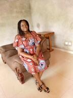

Je suis Victoire née en 2000 le 27 février.Je suis titulaire d'un bac C et d'une licence en mécanique.
Je suis tès motivée et j'aime lire.Mes passions sont la mécanique et la lecture.
Je suis à WHISPA pour faire
le développement web parce que c'est un métier qui commence à me passionner.